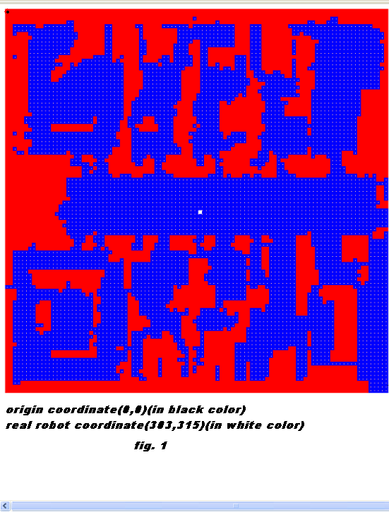

Computer Science & Engineering Mobile RoboticsList Of Experiments
Localization
Localization has proven to be the most critical aspect of mobile robot navigation. Generally indoor localization is achieved with the aid of maps over and above dead reckoning. Indeed a mobile robot localizing purely based on its odometry gets lost very soon due to the diverging nature of such errors, rendering it useless for any application or task. Hence indoor robots need external navigational aids or references to correct such errors, which has been the key challenge of any localization task.
Localization methods that involve the use of an a-priori known map are traditionally classified in two paradigms; global and local localization .
Global localization is the problem of estimating the state (pose) of the robot in a known map without an initial estimate of its state. The challenge is that in the absence of an initial guess the problem cannot be modelled with unimodal probability distribution leading to a search over all possible poses or states of the robot. The search is inevitably exponential in state dimensions
Local localization is the problem of estimating the robot's state in a given map. State here could be either location of the robot represented as (x,y) coordinates in a reference frame or it could denote a configuration of the robot represented by its location and orientation i.e., (x,y,theta). The map could be a map of line segments or a map of grids. For example in the figure below a grid map is represented with obstacles are shown in red, the non-obstacle areas in blue. The robot is shown in white and virtual robot is shown in green. The map and the robot are represented in the same reference frame. Let the origin of the reference frame be the top left corner of the map(0,0)(fig.1) , then a location on the obstacle indicated by the arrow has its coordinates as (369,165) and the robot's location in the same map (fig.2) is (309,309).
The problem of global localization is for the robot to determine its location in the map, i.e., it has to possess an algorithm that can output the robot's location as (309,309) in the map. Note that the robot is actually unaware of its location but is in possession of the map.
 
Fig.1 is showing the origin of the reference frame as (0,0) at the top left of the map (black dot) and denote the location of the robot as () in (white dot).
An analogy can be drawn of a man with a city map trying to find a particular place in an unknown city. In order to use the city map, the man must first determine his position within the city. For example, it is sufficient even if he can locate in the street in which he currently is, in the city map. To do so, he can look around and compare his observations with the information represented in the map. Here, such an observation can be for example a road sign, a junction, a sign board or a landmark. This is global localization.